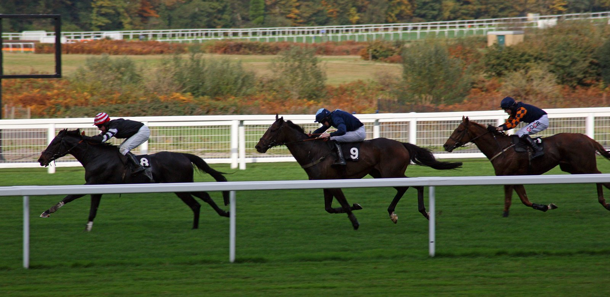

Rimell no escolarizaba tras una caída; hoy los grandes preparadores saltan en casa cada semana
«Que el muy bribón recuerde esa caída», respondió Fred Rimell cuando le preguntaron si Comedy of Errors había saltado en casa tras un tropiezo. Medio siglo después, los métodos de las grandes cuadras han cambiado.

La respuesta de Rimell, dicha en tiempos de poca corrección política, fue tajante: «Que el muy bribón recuerde esa caída. ¡No tendrá ganas de repetirla!». El preparador, que pasaba por ser parco en escolarización, añadió su doctrina: «Escolarizo menos que nadie. Solo al principio de la temporada. Nunca vuelvo a hacerlo salvo que el caballo se caiga y haya que refrescarle la mente; es importante no escolarizar en exceso».
Es difícil discutir los métodos de quien envió a cuatro caballos distintos a ganar el Grand National, y además cuando los obstáculos de Aintree todavía eran de los más temibles. Aun así, unos cincuenta años después, su enfoque podría parecer a muchos tan anticuado como su lenguaje.
Dan Skelton, actual preparador campeón, da un peso considerable al salto en casa. Según se cuenta, le gusta escolarizar a casi todos los caballos de su cuadra una vez por semana. Su familia tiene raíces en el salto de obstáculos, y eso se nota en su forma de trabajar.
Nicky Henderson, por su parte, lleva tiempo recurriendo a Yogi Breisner, especialista del concurso completo, para educar a sus caballos en el salto o devolverles la confianza. La mayoría de las cuadras punteras cuentan hoy con amplias instalaciones de escolarización. Paul Nicholls ha invertido este mismo verano en una calle de escolarización de todo tiempo.
El repaso sirve de punto de partida para valorar cómo se perfila la división de novice chasers, antes de mirar a lo más destacado del fin de semana en Haydock y Ascot.
Por Martín Larrañeta